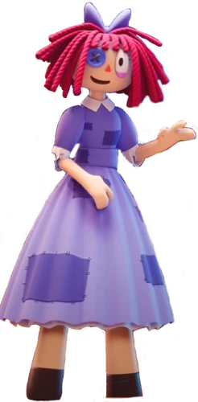

Personajes
PONMI
Es la protagonista, una mujer que quedó atrapada en el circo digital. Se muestra nerviosa, paranoica y desesperada por encontrar una salida. A pesar de su ansiedad, es una de las más cuerdas del grupo e intenta razonar en medio del caos.
JAX
Un conejo morado, es el bromista del grupo. Es sarcástico, despreocupado y le encanta molestar a los demás, especialmente a Gangle y Ragatha. Aunque parece insensible, se sugiere que su actitud es una máscara para ocultar su propio miedo y fragilidad.
CAINE
Es la inteligencia artificial que controla el circo y actúa como su maestro de ceremonias. Es excéntrico, enérgico y aparentemente ajeno al sufrimiento de los demás. Su principal objetivo es crear "aventuras" para mantener a todos ocupados y, según él, evitar que se vuelvan locos.
RAGATHA
Con la apariencia de una muñeca de trapo, es la más optimista y dulce del grupo. Su actitud positiva es un mecanismo de defensa para no volverse loca. Es amable y comprensiva, especialmente con Pomni, y trata de mantener al grupo unido.
ZOOBLE
Con un cuerpo formado por piezas intercambiables, Zooble es un personaje irritable y apático. No muestra interés en las aventuras de Caine y prefiere que no le molesten. A pesar de su mal humor, a veces deja ver un lado más amable.
KING
Es el personaje que más tiempo lleva atrapado en el circo, lo que lo ha vuelto paranoico y olvidadizo. Con la apariencia de una pieza de ajedrez, se asusta con facilidad, pero en momentos de lucidez demuestra ser amigable y leal.
GANGLE
Hecha de cintas rojas, Gangle es un personaje tímido y triste que se esconde detrás de una máscara de comedia. Cuando su máscara se rompe, revela su verdadera cara de tragedia. Es muy sensible y llora con facilidad, especialmente por las bromas de Jax.
BUBBLE
Es el asistente de Caine, una burbuja con dientes afilados. Es un personaje caótico y molesto que a menudo es explotado por Caine, solo para reaparecer ileso. A pesar de su naturaleza extraña, realiza tareas para Caine, como limpiar y cocinar.